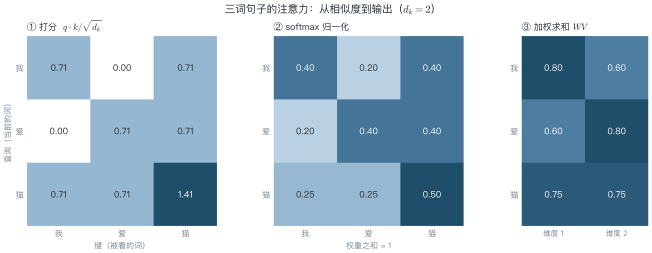
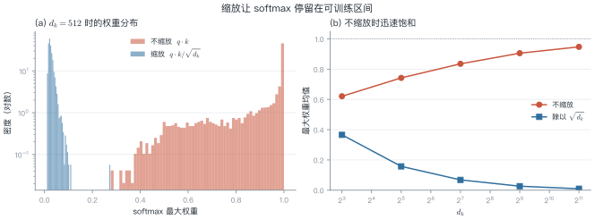
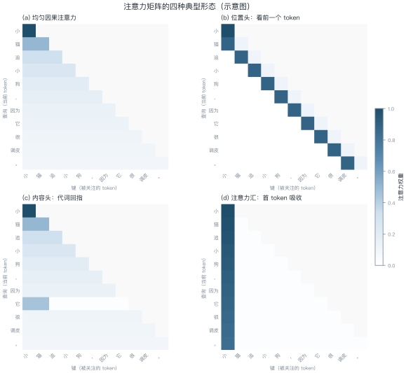
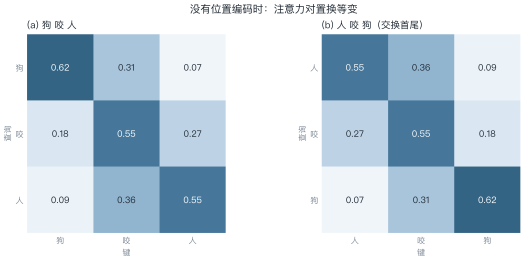
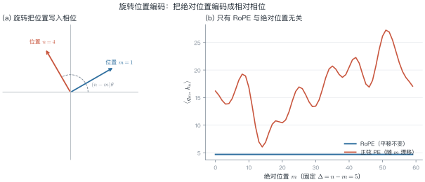
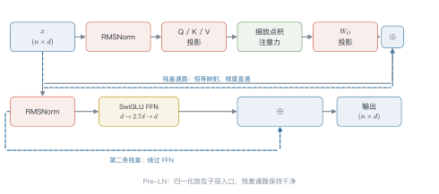

第 4 讲 注意力机制完全拆解¶
本讲位置
第三部分的开篇。前置知识：第 3 讲的 seq2seq 与加性注意力。本讲把 Transformer 的核心部件拆到零件级别，第 5 讲再用它搭出完整的 block。
📅 事实核查至 2026-11
本讲的历史事实（Vaswani et al., 2017；Su et al., 2021）均已核对原始论文，无 2024 年后的时效性陈述。
学习目标¶
学完本讲，你应该能够：
- 写出缩放点积注意力的完整公式，并用三行方差推导解释 \(\sqrt{d_k}\) 的来历；
- 说明多头注意力与单头在参数量、计算量上的等价关系，以及它为什么不是"简单的并行"；
- 证明不加位置编码时注意力对置换等变，并推导 RoPE 的相对位置性质；
- 独立实现一个数值稳定、mask 正确的注意力模块，与 PyTorch 输出对齐到 \(10^{-6}\)。
0 直觉：一次可微的查字典¶
想象你在图书馆找资料。
你脑子里有一个问题——这是 query。每本书的书脊上有一行标签——这是 key。书里真正的内容是 value。
传统检索是硬匹配：按标签排序，取出最相关的那一本。这个操作不可微，没法端到端训练。
注意力做的事情只有一点差别：它不取一本，而是按匹配度把所有书都翻一遍，然后加权汇总。
权重经过 softmax 归一化，于是"取哪一本"变成了"各看多少"。整个操作对 \(q\)、\(k\)、\(v\) 都可微，梯度可以一路回传。
这就是注意力的全部直觉。剩下的问题都是工程细节：匹配度怎么算、权重会不会太尖、多个头怎么分工、顺序信息从哪来。
一句话总结
注意力 = 用相似度做软寻址。它替代的不是"记忆"，而是"检索"。
1 形式化：Q、K、V 为什么是三个¶
设输入序列为 \(\boldsymbol{X} \in \R^{n \times d}\)（\(n\) 个 token，每个 \(d\) 维）。我们引入三个可学习的投影矩阵：
于是缩放点积注意力（scaled dot-product attention）定义为
其中 softmax 按行归一化，\(\boldsymbol{Q}\boldsymbol{K}^\top \in \R^{n\times n}\) 的第 \((i,j)\) 个元素是第 \(i\) 个查询与第 \(j\) 个键的相似度。
为什么必须是三个投影，而不是一个？
假设令 \(\boldsymbol{W}_Q=\boldsymbol{W}_K=\boldsymbol{W}_V=\boldsymbol{I}\)，则
此时"我该关注谁"和"我该取出什么"被迫共用同一个表示：一个 token 的向量既决定它被别人关注的程度，又决定它被取出时的内容。这两件事在语义上是正交的——代词"它"应该高度关注"小猫"，但"它"这个 token 本身并不携带"小猫"的内容。
解耦之后，模型可以学到一个专门的匹配子空间（\(\boldsymbol{W}_Q,\boldsymbol{W}_K\)）和一个专门的内容子空间（\(\boldsymbol{W}_V\)）。这是注意力表达力的来源。
维度约定
本讲义统一用 \(d\) 表示模型宽度（\(\dmodel\)），\(d_k=d_v=d/h\) 表示单头维度，\(h\) 表示头数，\(n\) 表示序列长度。记住这四个符号，后面所有复杂度分析都围绕它们展开。
例 4.1 三词句子的注意力手算¶
公式看完还是虚的。我们用一个能算完的例子，把 (L4.1) 的三步走一遍。
句子只有三个词：我 / 爱 / 猫。取 \(d_k=2\)，并假设投影后的查询、键、值恰好相同（只为手算方便，真实模型里三者由不同矩阵得到）：
| token | \(\boldsymbol{q}_i=\boldsymbol{k}_i=\boldsymbol{v}_i\) |
|---|---|
| 我 | \((1,\ 0)\) |
| 爱 | \((0,\ 1)\) |
| 猫 | \((1,\ 1)\) |
第一步：打分。 先算点积，再除以 \(\sqrt{2}\approx1.41\)：
| 查询 ＼ 键 | 我 | 爱 | 猫 |
|---|---|---|---|
| 我 | 0.71 | 0.00 | 0.71 |
| 爱 | 0.00 | 0.71 | 0.71 |
| 猫 | 0.71 | 0.71 | 1.41 |
"猫"和自己的点积是 \(1\times1+1\times1=2\)，除以 1.41 得 1.41，是整张表里最大的分数。
第二步：softmax。 每一行独立归一化。以第一行为例：
三行都算完：
| 查询 ＼ 键 | 我 | 爱 | 猫 |
|---|---|---|---|
| 我 | 0.40 | 0.20 | 0.40 |
| 爱 | 0.20 | 0.40 | 0.40 |
| 猫 | 0.25 | 0.25 | 0.50 |
第三步：加权求和。 还是看第一行：
三行合起来就是输出矩阵：
| 维度 1 | 维度 2 | |
|---|---|---|
| 我 | 0.80 | 0.60 |
| 爱 | 0.60 | 0.80 |
| 猫 | 0.75 | 0.75 |

从这个例子里能读出三件事
- 每行加起来都是 1：softmax 按行归一化，不是按列。所以每个查询"分配出去"的关注度总量固定。
- 分数大不等于权重压倒性：1.41 的最高分只换来 0.50 的权重，因为 softmax 会把差距压平——这正是 §2 讨论尺度问题的原因。
- 输出是加权平均，不是选择：\(\boldsymbol{o}_1\) 同时混入了三个词的信息，没有任何一个权重等于 1。
2 缩放因子：一个方差论证¶
公式 (L4.1) 里那个 \(\sqrt{d_k}\) 不是装饰。它是这一节要证明的唯一结论。
2.1 推导¶
假设 \(\boldsymbol{q},\boldsymbol{k}\in\R^{d_k}\) 的每个分量独立同分布，均值 0、方差 1。这是 LayerNorm 之后激活的合理近似。
点积展开：
期望：
方差（各项独立、均值为零，交叉项消失）：
所以点积的标准差是 \(\sqrt{d_k}\)。\(d_k=128\) 时标准差约 11.3，\(d_k=4096\) 时约 64。
2.2 不缩放会发生什么¶
softmax 对输入的尺度极其敏感。当 logits 的标准差达到几十，最大值与其余值的差距会被指数放大，输出退化成近似 one-hot：
此时 softmax 的雅可比矩阵 \(\partial p_i/\partial z_j = p_i(\delta_{ij}-p_j)\) 几乎全为零——梯度消失。模型不是"学得慢"，而是根本学不动。
除以 \(\sqrt{d_k}\) 之后，由 (L4.2)，缩放后点积的方差为 \(d_k/d_k=1\)，与维度无关。softmax 始终工作在"温和"区间。

常见误解：\(\sqrt{d_k}\) 是"温度"吗
可以这么理解，但要小心。除以 \(\sqrt{d_k}\) 的目的是让 logits 的方差与维度无关，而不是调节"创造性"。推理时调 temperature 是在这个基础上再乘一个系数，两者作用位置相同、目的不同。
2.3 数值稳定的 softmax¶
实现时不能直接算 \(e^{z_i}\)：\(z_i\) 稍大就溢出。标准做法是先减去每行最大值：
为什么减一个常数不改变结果：分子分母同乘 \(e^{-m}\)，约分即得。减去 \(m\) 后最大的指数项是 \(e^0=1\)，不会上溢。
这一步在数学上平凡，在工程上是生死线。第 8 节会讲一个更隐蔽的坑：整行被 mask 时会发生什么。
3 多头注意力：子空间分解，不是简单并行¶
单个注意力头只能学一种匹配模式。但语言里的依赖关系是多种并存的：前一个词、句首、主谓一致、指代、标点边界……
多头注意力（multi-head attention）把 \(d\) 维空间切成 \(h\) 份，每份独立做一次注意力，最后拼接投影：
其中 \(\boldsymbol{W}_Q^{(i)},\boldsymbol{W}_K^{(i)},\boldsymbol{W}_V^{(i)}\in\R^{d\times d/h}\)，\(\boldsymbol{W}_O\in\R^{d\times d}\)。
3.1 参数与计算量核算¶
设 \(d=512\)，\(h=8\)，于是 \(d_k=64\)。
| 方案 | 每个投影矩阵 | 三个投影合计 | 输出投影 |
|---|---|---|---|
| 单头（\(d_k=512\)） | \(512\times512=262{,}144\) | \(786{,}432\) | \(262{,}144\) |
| 多头（\(h=8\)，\(d_k=64\)） | \(512\times64=32{,}768\) | \(786{,}432\) | \(262{,}144\) |
参数量完全相同，计算量也完全相同。
那多头的意义在哪？在于低秩约束。单头在 \(d\) 维空间里直接算一个 \(n\times n\) 的相似度矩阵；多头则是 \(h\) 个 \(d/h\) 维子空间里的 \(n\times n\) 矩阵，各自独立归一化、独立加权。
这带来两个实际后果：
- 每个头被迫专注一种关系。\(d/h\) 维空间装不下所有模式，低秩瓶颈起到正则化作用。
- 权重分布不同。softmax 在各自的子空间内归一化，因此一个头可以"只看前一个词"，另一个头可以"只看句首"，互不干扰。单头里这些模式会互相竞争同一份概率质量。
\(\boldsymbol{W}_O\) 也不是可有可无的：它把各头输出混合回 \(d\) 维。没有它，各头只能简单拼接，维度间无法交互。

3.2 为什么有效：可解释性证据¶
Michel et al. (2019) 做了一个很说明问题的实验：训练后逐个头剪枝，发现大部分头可以删掉而性能几乎不变，但少数关键头一旦删除，模型立刻崩溃。
这说明头之间存在明确分工，且重要性高度不均。后续的注意力可视化研究进一步发现：
- 浅层多为位置头（关注相邻 token）与句法头（关注依存关系）；
- 中层出现指代头与实体头；
- 深层趋向语义聚合，注意力分布变平。
图 L4-3(d) 展示的"注意力汇"（attention sink）是另一个反复出现的现象：无论输入是什么，第一个 token 总会吸收大量注意力。StreamingLLM 正是利用这一点，保留首 token 的 KV 就能支持无限长流式输入。
从多头到 GQA
既然键值可以共享，何必每个头都存一份？多查询注意力（MQA）让所有头共享一组 K/V，分组查询注意力（GQA）让每组头共享一组。这是第 13 讲推理优化的伏笔：GQA 把 KV cache 直接缩小 \(h/h_{kv}\) 倍。
4 位置编码：打破置换等变¶
4.1 没有位置编码会怎样¶
命题：若注意力中不含任何位置信息，则它对输入序列的置换等变。
设 \(\boldsymbol{P}\) 为置换矩阵（\(\boldsymbol{P}^\top\boldsymbol{P}=\boldsymbol{I}\)），输入变为 \(\boldsymbol{P}\boldsymbol{X}\)。则
第二步用了 softmax 按行归一化的性质：同时置换行和列，等价于先算再置换。
结论：输出只是跟着输入一起被置换。模型无法区分"狗咬人"和"人咬狗"。
例 4.2 "狗咬人"与"人咬狗"¶
把 3 个词的注意力权重矩阵画出来，交换首尾两个词，看矩阵怎么变。
设原句"狗咬人"的权重矩阵为 \(\boldsymbol{W}\)。交换第 1、3 个词得到"人咬狗"，相当于左乘右乘同一个置换矩阵：

逐格对照：0.62 从左上角跑到右下角，0.07 从右上角跑到左下角，每个数字都没变，只是换了位置。
这正是 (L4.4) 的直观含义：输入变了，但模型"看到"的仍是同一张表，输出也只是跟着换位置。没有位置编码，它无从知道谁是主语、谁是宾语。
加了位置编码之后会怎样
\(\boldsymbol{q}_{\text{狗}}\) 与 \(\boldsymbol{q}_{\text{人}}\) 的相位不同，两句话的权重矩阵不再互为置换。模型才第一次有了区分语序的依据。
4.2 四代方案¶
| 方案 | 代表 | 做法 | 外推性 | 代价 |
|---|---|---|---|---|
| 正弦绝对位置 | 原版 Transformer | 用不同频率的 sin/cos 加到嵌入上 | 差 | 无 |
| 学习式绝对位置 | BERT、GPT-2 | 每个位置一个可训练向量 | 无（长度固定） | 参数 \(n_{\max}\times d\) |
| 相对位置偏置 | T5、ALiBi | 在 logits 上加 \(b(i-j)\) | 较好 | 少量参数或无参数 |
| 旋转位置编码 | RoPE（LLaMA 系） | 旋转 Q/K 的相位 | 好（可外推） | 无额外参数 |
ALiBi 的做法特别简洁：直接在注意力 logits 上加 \(-m\cdot|i-j|\)，\(m\) 是每个头固定的斜率。距离越远惩罚越大，天然鼓励局部关注，外推表现意外地好。
但今天的主流是 RoPE。原因值得单独推导。
4.3 RoPE：把位置写进相位¶
核心想法：不改变向量的模长，只旋转它的相位；让旋转角度随位置线性增长，于是两个向量的内积只依赖它们的相对位移。
把 \(d\) 维向量两两分组，看成 \(d/2\) 个二维平面。第 \(i\) 组的旋转角为
位置 \(m\) 对应的旋转矩阵是分块对角阵：
对查询和键分别施加旋转：\(\tilde{\boldsymbol{q}}_m=\boldsymbol{R}_m\boldsymbol{q}\)，\(\tilde{\boldsymbol{k}}_n=\boldsymbol{R}_n\boldsymbol{k}\)。
关键性质：旋转矩阵是正交的，且角度可加，
于是
内积只依赖 \(n-m\)。这就是 RoPE 相对位置性质的完整证明——只有两行。

三个值得记住的推论：
- 不改变模长：\(\|\boldsymbol{R}_m\boldsymbol{q}\|=\|\boldsymbol{q}\|\)，数值稳定。
- 无额外参数：位置信息完全由固定的频率决定。
- 可作用于 KV cache：旋转在写入缓存前完成，之后无需重算。
至于频率设计，\(\omega_i\) 从 \(1\) 衰减到 \(10000^{-1}\)，对应波长从 \(2\pi\) 到 \(2\pi\times10^4\)。高维（\(i\) 大）的旋转极慢，负责长程粗定位；低维旋转快，负责局部精细位置。这种"多尺度"结构是 RoPE 能外推的物理直觉。
RoPE 不是万能的
训练长度之外，高频维度会"转圈"导致混叠，性能仍会下降。位置插值（PI）、NTK-aware 缩放、YaRN 都是对这个问题的补救，详见第 12 讲。
5 掩码：三种 mask 不要混¶
5.1 因果掩码¶
自回归生成要求位置 \(t\) 只能看到 \(\le t\) 的信息。做法是在 softmax 之前把上三角置为负无穷：
训练时一次前向算完整序列（teacher forcing），推理时每步只算新 token——这是训练并行、推理串行的根本原因，也是 KV cache 存在的理由。
5.2 填充掩码¶
批处理时序列长度不一，需要把 padding 位置屏蔽掉。注意它和因果掩码的形状不同：
| 掩码 | 形状 | 作用维度 |
|---|---|---|
| 因果掩码 | \(n\times n\) | 每个查询屏蔽未来的键 |
| 填充掩码 | \(1\times n\) 或 \(b\times 1\times 1\times n\) | 屏蔽所有查询对 padding 键的注意力 |
两者需要按位与合并，而不是相加。
5.3 NaN 陷阱¶
如果用 \(-\infty\) 做 mask，且某一行的所有位置都被 mask（例如整句都是 padding），softmax 会变成 \(\frac{0}{0}\)，输出 NaN。
两种解法：
- 用有限大负数，如 \(-10^9\) 或
torch.finfo(dtype).min； - 或在 softmax 前加保护，把全 mask 行的 logits 置零。
这个 bug 极难查
NaN 会沿着梯度传播，污染整个 batch，但你看到的报错往往在几百步之后。在写 attention 的第一天就养成用有限大负数的习惯。
6 一个 block 到底算了什么¶
6.1 数据流¶

现代大模型普遍采用 Pre-LN：归一化放在子层输入端，残差通路保持"干净"。原版 Transformer 的 Post-LN 在深层会梯度爆炸，需要 warmup 才能训起来。
6.2 参数核算：以 LLaMA-7B 为例¶
设 \(d=4096\)，\(L=32\) 层，\(h=32\)，\(d_{\text{ff}}=11008\)，词表 32000。
每层注意力：四个 \(d\times d\) 矩阵
每层 FFN（SwiGLU 有三个矩阵：gate、up、down）：
每层合计约 \(202.4\)M，32 层约 \(6.48\)B，加上词嵌入 \(32000\times4096\approx131\)M，总计约 6.7B——这正是 LLaMA-7B 的实际参数量。
每 token 前向 FLOPs 约 \(2N \approx 13.4\) GFLOPs；训练时含反向与重计算，约 \(6N \approx 40\) GFLOPs。
KV cache（fp16，上下文 4096）：
注意这一项随上下文长度线性增长，与参数量无关。一个 7B 模型跑 128K 上下文，仅 KV cache 就要 67GB——比模型本身大一个数量级。这是第 13 讲所有优化的起点。
6.3 复杂度¶
| 项 | 时间 | 显存 |
|---|---|---|
| 注意力打分 | \(O(n^2 d)\) | \(O(n^2)\)（可优化到 \(O(n)\)） |
| 线性投影 | \(O(n d^2)\) | \(O(nd)\) |
| FFN | \(O(n d\, d_{\text{ff}})\) | \(O(nd_{\text{ff}})\) |
\(n\) 与 \(d\) 的相对大小决定瓶颈：短序列时 FFN 主导，长序列时 \(n^2\) 项主导。粗略的分界点是 \(n\approx d\)。
7 动手实现¶
下面是完整实现，30 行，无第三方依赖（除 PyTorch）：
import math
import torch
import torch.nn.functional as F
def scaled_dot_product_attention(q, k, v, causal=True, pad_mask=None):
"""q, k, v: (B, H, N, D)。返回 (输出, 注意力权重)。"""
d_k = q.size(-1)
scores = q @ k.transpose(-2, -1) / math.sqrt(d_k) # (B,H,N,N)
if causal:
n = scores.size(-1)
# 上三角为 True 的位置要屏蔽；用有限大负数，避免 NaN
mask = torch.triu(torch.ones(n, n, dtype=torch.bool, device=q.device), diagonal=1)
scores = scores.masked_fill(mask, torch.finfo(scores.dtype).min)
if pad_mask is not None:
# pad_mask: (B, N)，True 表示是 padding
scores = scores.masked_fill(pad_mask[:, None, None, :], torch.finfo(scores.dtype).min)
attn = F.softmax(scores, dim=-1)
return attn @ v, attn
与 PyTorch 官方实现对齐（Lab 1 会完整跑这个测试）：
torch.manual_seed(0)
q, k, v = (torch.randn(2, 4, 16, 32, dtype=torch.float64) for _ in range(3))
out, _ = scaled_dot_product_attention(q, k, v)
ref = F.scaled_dot_product_attention(q, k, v, is_causal=True)
print((out - ref).abs().max().item()) # 期望 < 1e-12（float64）
为什么用 float64 测
float32 下 softmax 的实现顺序差异会带来 \(10^{-7}\) 量级的误差，掩盖真正的 bug。对齐测试一律用 float64，确认逻辑正确后再回到 bf16 跑性能。
8 工程坑清单¶
这些是实际写模型时最容易踩的八个坑，按出现频率排序。
- 用 \(-\infty\) 做 mask → 整行被 mask 时 NaN。用
finfo.min。 - 忘记除以 \(\sqrt{d_k}\) → 训练 loss 一开始就平，梯度极小。
- 多头 reshape 顺序错：正确顺序是
(B, N, H, D) → (B, H, N, D)，转置时把 head 维和 seq 维搞混是最常见的静默 bug。 - 因果掩码方向反了：
triu(diagonal=1)屏蔽未来，tril屏蔽过去。写反了模型仍能训练，只是效果莫名其妙地差。 - padding mask 形状广播错：
(B,N)要扩成(B,1,1,N)，否则会按最后一维广播成完全错误的形状。 - bf16 下 logits 溢出：bf16 动态范围大但精度低，累加顺序不当会掉点。注意
finfo.min在 bf16 下约 \(-3.4\times10^{38}\)，参与减法仍安全。 - GQA 用
repeat而不是expand：repeat会真实复制 KV，显存翻倍；expand只改 stride。 - FlashAttention 的数值差异：在线 softmax 改变了求和顺序，与朴素实现有 \(10^{-3}\) 量级差异，属于正常现象，不要拿它当 bug 查。
9 论文与延伸¶
| 年份 | 论文 | 一句话贡献 |
|---|---|---|
| 2014 | Bahdanau et al., Neural Machine Translation by Jointly Learning to Align and Translate | 加性注意力的起点 |
| 2017 | Vaswani et al., Attention Is All You Need | 缩放点积 + 多头 + 正弦位置 |
| 2019 | Michel et al., Are Sixteen Heads Really Better than One? | 头剪枝实验，证明分工不均 |
| 2019 | Shazeer, Fast Transformer Decoding: One Write-Head is All You Need | MQA，KV cache 优化的起点 |
| 2021 | Su et al., RoFormer: Enhanced Transformer with Rotary Position Embedding | RoPE |
| 2021 | Geva et al., Transformer Feed-Forward Layers Are Key-Value Memories | FFN 的记忆解释 |
| 2022 | Dao et al., FlashAttention | IO 感知的精确注意力 |
| 2023 | Ainslie et al., GQA | 分组查询注意力 |
| 2023 | Xiao et al., Efficient Streaming Language Models with Attention Sinks | 注意力汇与流式推理 |
10 习题¶
🟢 概念题
- 如果把 \(h\) 从 8 增到 16（保持 \(d\) 不变），参数量、计算量、单头维度各如何变化？为什么说"多头不是免费午餐"？
- 因果掩码在训练和推理时的形状分别是什么？为什么推理时不需要 \(n\times n\) 的掩码？
🟡 推导题
- 证明：若 \(q_i,k_i\) 独立且 \(\E[q_i]=\mu_q,\E[k_i]=\mu_k\)，则 \(\Var(\boldsymbol{q}\cdot\boldsymbol{k})=d_k(\sigma_q^2\sigma_k^2+\mu_q^2\sigma_k^2+\mu_k^2\sigma_q^2)\)。均值不为零时，缩放因子还应该是 \(\sqrt{d_k}\) 吗？
- 推导 softmax 的雅可比矩阵，并说明为什么 \(p\to\) one-hot 时梯度消失。给出"梯度最大"时 \(p\) 的取值。
🔴 实现题
- 实现 RoPE 的
rotate_half版本，验证与"逐对旋转"版本数值一致；再验证 (L4.5) 的相对位置性质。 - 用纯 NumPy 实现一个 4 层、4 头的迷你 Transformer block，输入随机序列，前向跑通并与 PyTorch 对齐（提示：注意 LayerNorm 的 epsilon 和 PyTorch 默认值一致）。
11 本讲小结¶
一张图记住注意力
四个关键数字
- \(\sqrt{d_k}\)：让 logits 方差恒为 1，防止 softmax 饱和
- 多头参数量 = 单头参数量：\(h\times(d\times d/h)=d^2\)
- KV cache = \(2\cdot L\cdot d\cdot n\cdot\) 字节数：随 \(n\) 线性增长
- 每 token 前向 FLOPs ≈ \(2N\)
三个易错点
- mask 用 \(-\infty\) → NaN；用
finfo.min - 多头 reshape 顺序：
(B,N,H,D) → (B,H,N,D) - RoPE 的内积只依赖 \(n-m\)，这是它能外推的根本原因
一句话
注意力的本质是可微的软检索；\(\sqrt{d_k}\) 管数值稳定，多头管子空间分工，位置编码管顺序，掩码管因果性。